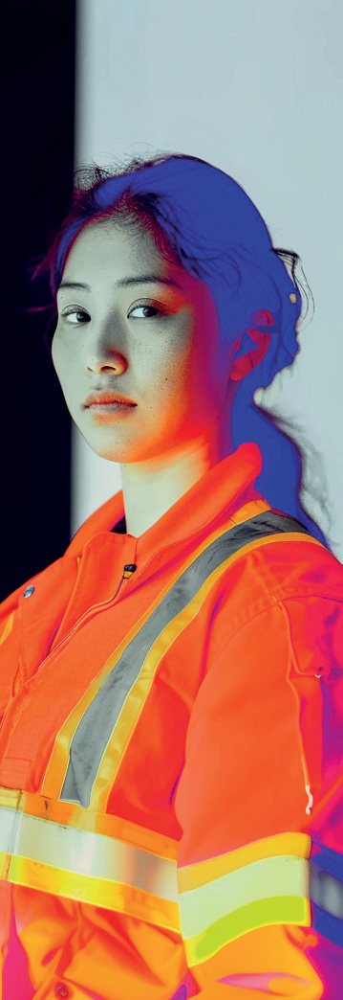

Ni vues ni connues
Ni vues Ni connues
Série documentaire - 8 minutes
Portraits de femmes
On a tous croisé une femme qui a compté ...
Ni vues Ni connues - Portraits de femmes


Discrètes. Résistantes. Essentielles
Un geste. Un regard. Une présence.
La beauté discrète de l'ordinaire.